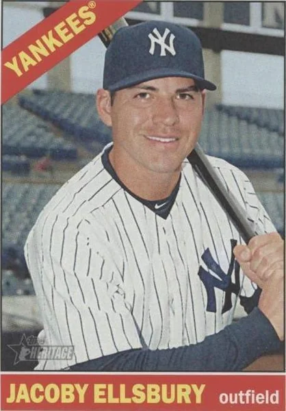

Jacoby Ellsbury "Chief"
Career Highlights & Facts
(Facts are AI-generated and may require verification)
- Became the first player of Navajo descent to reach the major leagues.
- Earned the title of 'Taco Hero' after stealing a base during a World Series game.
- Achieved a 30-30 season, recording at least 30 home runs and 30 stolen bases in a single campaign.
Would you like to find out more about Jacoby Ellsbury?
Player Biography
Jacoby Ellsbury
January 4, 2012
/
in
BioProject - Person
Native Americans
Native American Major Leaguers
/
by
admin
This article was written by
Oliver George Tapaha
Driven by the excitement of his teammates in the
nidaanéhé naháaztánígi
1
(dugout) and
jooł yikalí
(baseball) fans in the stadium, rookie Boston Red Sox center fielder Jacoby Ellsbury had one mission during
Game Two
of the 2007 World Series against the Colorado Rockies – steal second base and earn free tacos for everyone across the country.
2
Ellsbury, with his lightning-speed agility, stole second base in the bottom of the fourth inning and was celebrated as the first “Taco Hero.” Thanks in part to Taco Bell’s “Steal a Base, Steal a Taco” promotion,
3
from that moment on, millions of people around the world knew the name, Jacoby Ellsbury. And they recognized his face, too. In American Indian
4
communities, particularly among the Diné/Navajo, pride and hope flowed into the hearts of many tribal youth and adults because Ellsbury was the first
jooł yikalí naanéhé
(baseball player) of Navajo descent to play in major-league baseball.
The Confederated Tribes of Warm Springs reservation in central Oregon was the place Ellsbury called home. Born on September 11, 1983, in Madras, Oregon, Jacoby McCabe Ellsbury is the eldest son of Jim and Margie Ellsbury and has three brothers, Matt, Tyler, and Spencer. Ellsbury is a citizen of the Colorado River Indian Tribes. His mother is Navajo and was a special-education teacher in early childhood for the Tribe’s education department most of her career. She speaks the
Diné bizaad
(Diné/Navajo language) fluently and would teach her sons Navajo words as often as possible. His father, who grew up in Seattle, is of English and German descent and worked as a forester for the Bureau of Indian Affairs.
5
Ellsbury spent the first few years of his childhood on the Warm Springs reservation, living the life of any boy his age – playing video games, hitting balls off a tee, playing ping-pong, and watching sports on television, drawing inspiration from notable athletes like
Ken Griffey, Jr.
and
Michael Jordan
.
6
Warm Springs, Wasco, and Paiute tribes make up the Confederated Tribes. The reservation covers roughly 1,010 square miles and occupies parts of Wasco and Jefferson County on the Cascade Range near Mount Hood National Forest. Growing up there, he carried a competitive spirit on his shoulders when he engaged in sports or games and developed a passion for
jooł yikalí
early on.
In 1990 Ellsbury moved to nearby Madras with his family. At 10 years old, he already had his eyes set on great things. According to his mother, Ellsbury wanted to be a major-league player, be in the “hot box,” win the World Series, and be on a baseball card.
7
His journey to the majors was determined at a young age. Outside of elementary school, he participated in several Little League all-star teams. His father organized practice sessions at home and coached him and his younger brothers, Matt and Tyler, at local ball fields. On weekends, the family traveled to games and tournaments all over the Pacific Northwest. Ever his guide and constant supporter, Jacoby’s mother videotaped the games and he would review and critique his skills and performance to prepare for coming games. His father was a “soft-spoken, hardworking, [and a] fair-minded guy” off the field, but on the field, he was verbally tough on the boys. Matt struggled to measure up to his father’s high standards and strident tone, choosing often to ride the bus after games so as to avoid critique in the family car. Jacoby, on the other hand, “accept[ed] criticism and use[d] it to his advantage.”
8
When Ellsbury entered middle school, he moved with his mother and brothers to Parker, Arizona, to live near his grandmother, Alice McCabe, who was battling an illness.
9
Alice’s husband, Franklin McCabe, Sr., died before Jacoby was born, and Alice had no one in Parker who could provide the care she needed; so, Margie stepped up to lend a hand. In addition to helping her mother, Margie held a minimum-wage job to cover basic living expenses in the low-income housing where they lived.
Parker is a town on the Colorado River Indian Tribes reservation, which lies next to the Arizona-California border in La Paz County, along the shoreline of Colorado River and US Highway 95. The reservation rests on 300,000 acres of land and has been the homeland for the Mohave and Chemehuevi tribes since 1865. In the mid-1940s, some Hopi and Navajo people moved to the Colorado River Indian Tribes as part of the relocation project. Ellsbury’s grandparents were among the few who were forced to relocate to Parker, a place that once served as an internment camp for Japanese Americans at the start of World War II.
10
Alice and Franklin spent their lives in Parker harvesting alfalfa, cotton, and watermelon and raising their 13 children. Significantly, Ellsbury’s mother designed the Tribe’s flag in 1979.
11
The Ellsbury boys made frequent trips to Parker growing up, so reorienting themselves to reservation life happened effortlessly. Jacoby cherished all the time he spent living with his grandmother and had deep respect for his cultural heritage. He helped care for
dibé
(a flock of sheep), ate his favorite food –
dahdíníilghaazh
(fry bread) – and watched his grandmother weave distinct
dah’iistł’ó
(Navajo rugs). The boys attended Le Pera Elementary School in Poston, Arizona, 15 miles from Parker. At school, Jacoby always had a
jooł
(ball) in his hands and was close to his friends. After school and on weekends, the boys played in Parker’s Little League.
12
Adeishłííł Nízin
: Chasing Success to Live a Dream
For high school, Ellsbury returned to Oregon and enrolled at Madras High School, a school with even enrollment of Native, Latine, and White students. Impressively, he played
jooł yikalí
, basketball, football, soccer, and ran cross-country for the White Buffaloes. It is uncommon for high-school students to participate in five sports, but Ellsbury balanced his schedule and responsibilities to make this work. In the fall season, he played football and soccer or ran cross-country. During the winter and spring seasons, he devoted his time and energy to basketball and
jooł yikalí
, respectively. From his freshman year, he was a varsity-level athlete in nearly every sport he participated in but became a rising star basketball and
jooł yikalí
player his junior year.
The competitive nature that Ellsbury grew into as a child stayed with him throughout his high-school years. In his senior year, he achieved an impressive record in
jooł yikalí
with 65 stolen bases and a batting average of .537. He was named Oregon Player of the Year, Tri-Valley League co-player of the year, and first-team all-state. In basketball he averaged 23.6 points per game as a shooting guard and helped his team to a third-place finish in the 2002 Oregon 4A state tournament. He earned the first-team all-state selection his junior and senior years. In football, he was a double threat. He ran the ball on the offense side as a quarterback and then switched over to the defensive side and played as a defensive back. He ended the football season with nine interceptions and six kickoff returns for touchdowns.
13
When it came to cross
–
country, he “never lost a race.”
14
Ellsbury was impossible to defeat in cross-country races because he was told by his mother since he was a youngster that if he “rubbed the feet of a dragonfly on the bottom of [his] bare feet [he] would have the ability to run faster.”
15
This was his grandfather’s teaching retold to him in his memory and as a source of resilience – and he valued it, believed it, and lived it. He ran each race guided by the values his grandfather left behind coupled with the strength of the dragonfly that pushed him to produce more speed in his strides.
While basketball is the most popular sport at Madras, Ellsbury’s legacy is still remembered and honored. In one of the entryways of the school building, adjacent to the Buffalo Dome gymnasium, is an Athletic Hall of Fame. It displays a line of commemorative plaques on each inductees’ accomplishments. Near the center of the gallery wall is a plaque paying tribute to Ellsbury, the only American Indian in the school’s athletic history to receive this meritorious recognition. His notable achievements from 1998 to 2002 are etched on a wooden plaque for fans and visitors to see and admire. Inside the Buffalo Dome is a vinyl poster of Ellsbury endorsing a
jooł yikalí
gear with the following tagline, “Gear Up or Shut Up. The Advantage of Superior Gear.” And on the baseball field, Ellsbury’s jersey number (2) is permanently stamped on the right-field wall. He shares this stardom with
Darrell Ceciliani
, also a center fielder, whose jersey number (8) is featured on the left-field wall. Ceciliani was drafted by the New York Mets in 2009.
As a five-sport standout athlete who was quick, disciplined, and committed to winning, Ellsbury was noticed by scouts. Colleges and professional
jooł yikalí
leagues quickly spotted his willpower and versatility. Before he graduated from Madras in 2002, he was offered numerous athletic scholarships. He was even drafted by the Tampa Bay Devil Rays in the 2002 draft but chose not to sign with them. Instead, he prioritized his education and enrolled at Oregon State University on a
jooł yikalí
scholarship.
16
While enrolled at Oregon State University from 2002 to 2005, Ellsbury achieved academically while pursuing double majors in business and communication. In 2004 and 2005, he earned the PAC-10 All-Academic Honorable Mention. This recognition is awarded to noteworthy student-athletes who completed their freshman year of college with a grade-point average over 3.2. These consecutive honors gestured to Ellsbury’s dual commitment to getting a quality education and thriving on the diamond.
Ellsbury had an exceptional
jooł yikalí
career at Oregon State. In 2003 he batted .330 and was named a second-team freshman NCAA All-American as an outfielder. In 2004 he batted .352 and was selected as the PAC-10 Conference All-Star.
17
In 2005, as co-captain of the
jooł yikalí
team, his batting average reached .406, he had 26 stolen bases, and he was once again honored as the PAC-10 First Team NCAA All-American and named Co-MVP. The Oregon State Beavers won the NCAA Regional and the Corvallis Super Regional playoffs in 2005. However, they lost to Baylor, 4-3, in the first round of the College World Series. This was Oregon State’s first appearance in the College World Series since 1952. And Ellsbury’s stellar performance during the championship games did not go unnoticed by major-league teams. He ended his junior year with a .365 batting average, 37 doubles, 8 triples, 16 home runs, 101 RBIs, and 60 stolen bases.
In the years that Ellsbury was at Oregon State, he was one of the less than 1 percent of American Indian/Alaska Native students to attend college and one of the rare few Native athletes to play at the Division-I level. During the 2004-05 academic year, when Ellsbury was a junior, only 51 AI/AN student-athletes played for D-I teams. Kelvin Sampson, an enrolled member of the Lumbee Tribe, was the only American Indian to serve as a coach for a D-I school that year.
18
But the number of Native students recruited to play in college sports substantially increased in recent years thanks to former college athletes like Ellsbury, Bronson Koenig (Ho-Chunk Nation; University of Wisconsin men’s basketball standout), and Alissa Pili (Samoan and Inupiaq Alaska Native; University of Utah women’s lead basketball player), for paving the way for the next generations of Native youth to follow. In 2023-24, around 500 AI/AN students participated in a sport at a Division-I level, and over 2,300 AI/AN student-athletes competed in sports at the collegiate level (D-I, II, and III).
19
It is without question that more Native athletes will demonstrate their academic and athletic excellence in the years to come, but will colleges take a chance on those Native student-athletes?
The Boston Red Sox were particularly interested in Ellsbury, a left-handed, 6-foot-1 player. With all the attention Ellsbury was receiving his junior year, he agreed to explore professional
jooł yikalí
. On June 7, 2005, Ellsbury, his younger brother Matt (a freshman at OSU at the time), and his friends all anxiously watched the draft online and listened for Ellsbury’s name to be called.
20
Their wait was short-lived when the Boston Red Sox selected him in the first round, making him the 23rd overall pick. In a cheerful mood, Ellsbury immediately jumped on the phone to call his mother to share the news. She cried with joy, and they spread the news to the rest of the family and close friends. Within a month’s time, he moved to Boston, and then on July 1, signed a $1.4 million contract and began his professional
jooł yikalí
career as the first Navajo to play in the major leagues.
Yá’át’ééhíjí dóó Nínááyiiłba’
: Triumphs and Setbacks with the Red Sox
At the tender age of 21, Ellsbury felt the weight of expectations to be the top prospect for the Red Sox. His entrance to the minor leagues started with the Lowell Spinners in the short-season New York-Penn League. He batted .317 in 35 games and stole 23 bases.
21
At Class-A Wilmington in 2006, he appeared in 61 games, swiped 25 bases, and posted a batting average of .299. At midseason, Ellsbury was promoted to Double-A Portland and garnered 16 steals in 50 games and batted .308. The following year, 2007, he began again with Portland and after batting .452 in 17 games he was promoted to the Triple-A Pawtucket Red Sox at midseason; he hit .298 in 87 games. Ellsbury ended his 2007 season with Boston with a .353 batting average and nine stolen bases in 33 games.
Ellsbury made his major-league debut on June 30, 2007, when the Red Sox hosted the Texas Rangers. His first major-league base hit was a single; he was 1-for-4. The Red Sox lost the game, 5-4, but for him it tasted like victory. He lived what he had dreamed about since childhood. After his initial appearance in the big leagues, his mission was to show up to each game, mentally and physically ready to help turn his team into a championship team. His performance drew some praise, but the month of September was particularly important. He batted .361 in 105 plate appearances and earned a spot on the playoff roster.
22
From the bench in the first few games of the postseason, Ellsbury observed and learned each hitter’s posture and swing and then tracked where they batted the
jooł
. He was a pinch-runner or defensive replacement when called upon and carried out those tasks with confidence.
23
On October 20, manager Terry Francona inserted Ellsbury in the starting lineup in
Game Six of the League Championship Series
against the Cleveland Indians, replacing
Coco Crisp
in the
ałníigi sizínígíí
(center field) position.
In the Red Sox’ sweep of the Colorado Rockies in the World Series, Ellsbury was 7-for-16 (.438), four hits (three of them doubles) in
Game Three
, the first rookie to achieve this since
Joe Garagiola
in 1946.
In 2008, his first full season with the Red Sox, Ellsbury appeared in 145 games and played all three outfield positions, mainly as an
ałníigi sizínígíí
and
nish’náájígo sizínígíí
(left fielder).
24
He batted a respectable .280 and had 50 stolen bases in 61 attempts, leading the American League in steals.
When Ellsbury got on an
azis béédazhdiltałigíí
(a base), he was a force to be reckoned with. During the 2009 season, he set a new team record with 70 steals
25
and led the AL in stolen bases for the second year in a row. He ended the season with a .301 batting average, had 10 triples, and scored 94 runs.
Ellsbury’s 2010 season was marked by a recurrence of an injury that was not properly assessed. Playing left field on April 11, in the Red Sox’ sixth game of the season, he took a knee to the left ribs and suffered hairline fractures when he collided with third baseman
Adrian Beltré
as they chased a foul ball on the left-field line. This critical hit was severe enough that it immediately caused sharp pain to his back and he had difficulty breathing.
26
Ellsbury received medical treatment, and an X-ray revealed that he had bruised ribs. Several medications were prescribed to him, and he took them, but the intense pains persisted in the front and back of his torso. He requested the Red Sox for an MRI only to be told, “We aren’t going to MRI a bruise.”
27
When he returned home, he endured sleepless nights and had trouble getting out of bed due to excruciating pains he felt. He finally asked his agent to help him get an MRI done. The organization approved the request, and the MRI showed fractured ribs.
After what appeared to be adequate healing time, Ellsbury returned on May 22 and played in three games, only to reinjure the same ribs. Another visit to a medical specialist revealed a fifth fractured rib that caused additional damage to his nerves and back muscle.
28
He was returned to the disabled list, not to return until August 4. And nearly a week later, he reinjured his ribs once again and his season ended. He was heavily criticized by media analysts for being too soft.
29
For the season, Ellsbury played in 18 games, hit .192, stole 7 bases, and scored 10 runs.
30
After spending some time at the Athletes’ Performance Institute in Arizona, rehabbing and recovering from his rib and back injuries, Ellsbury had a strong 2011 season, batting .321 with 46 doubles, 32 home runs and 39 steals. He became the first Red Sox player to join the 30-30 club.
31
He earned four major accolades: the American League Comeback Player of the Year Award, the Rawlings Gold Glove Award, the Silver Slugger Award, and being named to the All-Star Game.
32
He was second in the AL MVP balloting. In Navajo, when a person overcomes great adversity, they are characterized with the term,
ha’óólní
(resilient/ce). Ellsbury’s
ha’óólní
led him to signing an $8.05 million deal with the Red Sox for another year.
33
But in 2012 Ellsbury’s performance plummeted and he missed nearly half the season with a right-shoulder injury.
34
A week into the season, in the fourth inning of a game against Tampa Bay, Rays shortstop
Reid Brignac
fell on Ellsbury at
naaki góné azis béédazhdiltałigíí
(second base) and dislocated his shoulder. Ellsbury missed three months of playing time and his worth and contributions to the Red Sox team was questioned. One writer wrote that Ellsbury’s value “isn’t low, it just already sunk.”
35
Indeed, Ellsbury had a terrible season, as did the entire team. They finished last in the AL with 69 wins and 93 losses. Ellsbury played in 74 games and finished with a .271 average, 4 home runs, and 14 steals.
36
Although Ellsbury had a rough season and was a possible trade candidate, Boston gave him another chance to showcase his talents. They offered him a $9 million, one-year contract.
Going into the 2013 season, Ellsbury was hopeful about helping his team win the championship trophy again. Early in the season, his optimism was quickly overshadowed by the struggles he faced. An
iikałígíí’s
(a batter’s) stance at the
ninádajiilyeedígi
(home plate), preparing to hit a
jooł
, is crucial. A slight shift in a player’s posture while at bat can impact the direction of a
jooł’s
flight. Such was the case with Ellsbury. His hip was out when at bat, which caused him to hit groundballs to the right side of the field.
37
Notwithstanding this minor mishap, his overall season performance in the majors was his second-best, and he helped his team win the World Series against the St. Louis Cardinals in six games. He played in all 16 playoff games. For the season, he appeared in 134 games, stole 52 bases, hit .298, had a slugging percentage of .426 and 53 RBIs.
Celebrating a second World Series win was bittersweet for Ellsbury. On the one hand, he knew his teammates functioned cohesively during the 2013 season and the thought of another exceptional season together in 2014 looked promising. On the other hand, in early December he signed a seven-year, $153 million contract with the New York Yankees.
T’áábita’ígii Naazne’
: An In-Between Player with the Yankees
Ellsbury started his season with the Yankees in spring 2014. He was in Toronto with his new team when his former Red Sox teammates received their championship rings in the same city. Ellsbury missed the celebration but received congratulatory messages from his former teammates.
Ellsbury’s transition to the Yankees was not so pleasant. There was an outcry from fans and the media asking why the Yankees spent a massive amount of money on a player who had a history of injuries.
38
Amid the criticisms, he stayed healthy most of the season, minus the nine final games he missed because of a thigh strain. In total, he played 149 games, batted .271, had 39 stolen bases, and added 16 home runs.
The 2015 season was a below-par season for Ellsbury. He played reasonably well the first month of the season, but then sustained a knee sprain in May, which resulted in losing two months of playing time.
39
Then in the postseason Ellsbury was benched in favor of
Chris Young
in a wild-card game against the Houston Astros. Ellsbury, 32 at the time, was viewed as “brittle” and “not a quick healer.”
40
The Yankees worried about the deterioration of his athleticism, but they had committed to him until 2020, one of the longest contractual agreements the Yankees had ever made with a position player. Ellsbury concluded the season with a batting average of .257 in 111 games.
Known for being one of the top baserunners in professional
jooł yikalí
, Ellsbury consistently held a steady track record for reaching nearly every
azis béédazhdiltałigíí
and stealing them with ease. However, during the 2016 season, he stole only 20 bases in 148 games. From the time he cut ties with the Red Sox, his stolen-base rate decreased each year. A Yankees fan blogger noted that Ellsbury had aged and the “lingering hip problem could easily explain any hesitation on the bases.”
41
Ellsbury’s mindset at the start of each new season was to play his best and get better as the season progressed. But achieving this was challenging for him the last couple of seasons with the Yankees. He was not terrible and not useless, but he was not great either – he was stuck somewhere in the middle – as an in-between player.
42
He hit .264 in 2017 and stole 22 bases. He played his last game on October 17, 2017, and missed all of 2018 and 2019 because of lower back issues and a torn hip. With a year to go on his contract, he was released by the Yankees on November 20, 2019.
43
After releasing him, the Yankees filed a grievance against Ellsbury, seeking to recover the $26 million remaining on his contract because he sought an outside facility, without permission, to rehab injuries he sustained the past two seasons.
44
The matter was settled with the amount awarded to Ellsbury kept confidential. He never signed with another major-league team.
While Ellsbury’s deal may be viewed by some as the worst in Yankees history, many fans remained loyal to him, particularly American Indian/Alaska Native communities. They considered him an example to follow. Among the Navajo, the youth called him a hero; they cared about what children thought about someone or something.
45
To them, Ellsbury mattered.
Bidááh Na’íídza dóó
Kék’ehashchiin
: Giving Back and Creating Pathways
Ellsbury married Kelsey Hawkins in 2012; they had spent six years together as a couple. They met at Oregon State University. They live in Scottsdale, Arizona, have four children, and stay connected to their relatives 2½ hours away in Parker, Arizona.
Giving back has always been one of Ellsbury’s life missions. During his time with the Red Sox, he donated to two charities, The Navajo Relief Fund and Project Bread: The Walk for Hunger. In 2011 he partnered with Nike N7 to host baseball camps for Native youth from multiple Tribal Nations on the Salt River Pima-Maricopa Indian Community in Scottsdale. He held these camps throughout his time with the Yankees. He also gave $1 million to the Oregon State baseball program in 2014. The funds were used to expand the locker-room facilities in the university’s Goss Stadium. The locker room was named in his honor.
When he was starting out as a professional
jooł yikalí
naanéhé
in 2005, Ellsbury was recognized at the Warm Springs Pi-Ume-Sha Treaty Days Pow Wow during the 150th celebration of the Treaty of 1855. He showed up there with his family and they gave him an Honor Dance. A tribal citizen stated, “Our elders shared with him that he is not only a role model for his tribe, but for all tribal children and people and we are all so proud of his accomplishments. He made the community feel so special. That is the kind of man this young man is – so respectful.”
46
Ellsbury is undeniably a respectful man, but he is also strong-minded, quiet, and humble. Each season, his fight never left him. He showed up to each game
bidziilgo
(with strength) and
ha’óólníi
go even when many people were not in his corner. In Native communities, he was highly admired for leaving his footprints behind for other Natives to follow, such as Anthony Seigler, who on July 1, 2025, with the Milwaukee Brewers, became the second Navajo
jooł yikalí
naanéhé
to compete in the major leagues.
47
In 2024 Jacoby McCabe Ellsbury, the first
jooł yikalí naanéhé
of Navajo descent to play in the majors, was inducted into the Oregon State University Hall of Fame, the first American Indian athlete in the university’s history to receive the honor.
Last revised: October 1, 2025
Sources
In addition to the sources cited in the Notes, the author consulted Baseball-Reference.com.
Photo credit
Jacoby Ellsbury, courtesy of the Boston Red Sox.
Notes
1
Navajo terms, particularly baseball-related terms translated into the Navajo language, are used in this article to honor the Tribe’s language and encourage their use among Navajo tribal citizens. See M. Yellowhair & E.C. Parnell, eds.,
The New Oxford Picture Dictionary: Navajo-English Edition
(New York: Oxford University Press, 1989).
2
David Lefort, “Tacoby Bellsbury,” Boston.com, October 26, 2007.
https://www.boston.com/sports/boston-red-sox/2007/10/26/tacoby_bellsbur/
.
3
Janey Murray, “World Series History and ‘Taco Heroes’ Collide in Cooperstown,” National Baseball Hall of Fame, October 2021.
https:
.
4
The terms American Indian, American Indian/Alaska Native, and Native are general terms used to describe Indigenous Peoples of North America. They are used interchangeably throughout this article.
5
Bob Sherwin, “Yankees’ Ellsbury Has Reputation as ‘Dirt Rat’ (It’s Praise),”
New York Times
, June 11, 2014.
https:
.
6
Beverly Bidney, “Indian Country Profile: Jacoby Ellsbury,”
Seminole Tribune
(Hollywood, Florida), April 29, 2014.
https://seminoletribune.org/indian-country-profile-jacoby-ellsbury/
.
7
Bryan Hoch, “Ellsbury’s Tireless Work Ethic Traces to Mother,” MLB.com, May 8, 2015.
https:
8
Neil Swidey, “The Jacoby Factor,”
Boston Globe
, March 30, 2008: 3.
https://archive.boston._jacoby_factor/?page=full
.
9
Joan M. Travis, “McCabe Family Supports Their Baseball Superhero – Jacoby Ellsbury,” ParkerPioneer.net, April 30, 2008.
https://www.parkerpioneer.net/news/article_6f1a7211-47fb-53e9-a0d2-7166ee312ad4.html
.
10
Jon Schwartz, “In His Blood: Jacoby Ellsbury’s Commitment to Navajo Youth Will Be Felt by Generations to Come,” MLB.com, April 3, 2017.
https:
.
11
Colorado River Indian Tribes, 2009: Retrieved from
https://www.crit-nsn.gov/
on March 15, 2025.
12
Joan M. Travis, “McCabe Family Supports Their Baseball Superhero – Jacoby Ellsbury.”
13
Emanuela Samwel, “Jacoby Ellsbury Biography: Life, Legacy and Achievements,”
Mabumbe
, January 23, 2025.
https:
.
14
Neil Swidey, “The Jacoby Factor.”
15
Bryan Hoch, “Ellsbury’s Tireless Work Ethic Traces to Mother.”
16
Tony Ahern, “Jacoby Ellsbury on the Hall of Fame Ballot,”
Madras
(Oregon)
Pioneer,
November 23, 2022.
17
Joan M. Travis, “McCabe Family Supports Their Baseball Superhero – Jacoby Ellsbury.”
18
Mary Annette Pember, “’Rez Ball’ Gains NCAA Certification Thanks to Native American Basketball Invitational (NABI),”
Diverse Issues in Higher Education,
April 9, 2007.
https:
.
19
Corbin McGuire, “NCAA Native American Student-Athlete by the Numbers,” NCAA, November 1, 2024.
https:
.
20
Gale Courey Toensing, “Boston Red Sox Select Ellsbury,”
Indian Country Times,
July 28, 2005.
https://ictnews.org/archive/boston-red-sox-select-ellsbury/
.
21
“Jacoby Ellsbury Biography,”
Mudville Megaphone
, October 27, 2007.
https://thethunderchild..html
.
22
Matt Collins, “Remembering the 2007 Red Sox: Jacoby Ellsbury,”
SB Nation Over the Monster
, April 24, 2017.
https:
.
23
Collins.
24
Associated Press, “Red Sox: Ellsbury Front and Center,”
Cape Cod Times
(Hyannis, Massachusetts), February 25, 2009.
https:
.
25
Benjamin Klein, “Jacoby Ellsbury Breaks Boston Red Sox Single-Game Stolen Base Record,” MLB, May 31, 2018.
https:
.
26
Joe McDonald, “Ellsbury Said Team Backed Time in Arizona,” ESPN, July 10, 2010.
https://www.espn.com/boston/mlb/news/story?id=5369440
.
27
McDonald.
28
Gordon Edes, “Jacoby Ellsbury Out at Least 4-6 Weeks,” ESPN, August 17, 2010.
https://www.espn.com/boston/mlb/news/story?id=5472158
.
29
Jackie MacMillan, “It’s Time to Embrace Jacoby Ellsbury,” ESPN, October 10, 2013.https://www.espn.com/boston/mlb/story/_/id/9804639/embrace-jacoby-ellsbury
30
“Jacoby Ellsbury Officially Ruled Out for Rest of 2010 Season,” NESN, October 10, 2010.
https:#:~:text=Jacoby%20Ellsbury%20will%20not%20resume,scored%20in%20just%2018%20games
.
31
Benjamin Klein, “Boston Red Sox: Jacoby Ellsbury Wins Comeback Player of the Year,” MLB, June 7, 2018.
https:
.
32
Emanuela Samwel, “Jacoby Ellsbury Biography: Life, Legacy and Achievements.”
33
Gordon Edes, “Jacoby Ellsbury Gets 9M Deal,” ESPN, January 18, 2013.
https://www.espn.com/mlb/story/_
.
34
Tyler Kepner, “Of Red Sox’ Many Problems, Injuries Have Hurt the Most,”
New York Times
, August 18, 2012: D3.
https://www.nytimes.-takes-blame-but-red-sox-woes-go-deeper.html
.
35
Ben Buchanan, “Season Review: Jacoby Ellsbury,” SB Nation Over the Monster, November 12, 2012.
https:
.
36
“Injury Plagued Ellsbury in 2012,”
Bend
(Oregon)
Bulletin,
October 6, 2012.
https://bendbulletin.com/2012/10/06/injuries-plagued-ellsbury-in-2012/
.
37
Matt Sullivan, “Jacoby Ellsbury’s Resurgence,” SB Nation Over the Monster, August 22, 2013.
https:
.
38
Andrew Mearns, “Yankees 2014 Roster Report Card: Jacoby Ellsbury,” SB Nation Pinstripe Alley, October 6, 2014.
https:#:~:text=Ellsbury%20also%20quickly%20made%20a,an%20excellent%2088.6%25%20success%20rate
.
39
Scott Davis, “Yankees 2015 Report Card: Jacoby Ellsbury,” SB Nation Pinstripe Alley, October 24, 2015.
https:
.
40
Joel Sherman, “The Bitter Reality of Yankees’ $153M Ties to Jacoby Ellsbury,”
New York Post
, October 6, 2015.
https:
.
41
Mike Axisa, “The Underwhelming Jacoby Ellsbury 2016 Season Review,” River Ave Blues, November 1, 2016:
https:#:~:text=330%2F.,average%20offensive%20production%20in%202016
.
42
Brad Kelly, “Yankees Jacoby Ellsbury Time to Turn the Page: Fantasy Value in 2017,” Fox News, March 4, 2020.
https:
.
43
Emanuela Samwel, “Jacoby Ellsbury Biography: Life, Legacy and Achievements.”
44
Mike Axisa, “Yankees Settle Contract Dispute with Jacoby Ellsbury and Avoid Grievance Hearing, Per Report,”
CBS Sports
, April 22, 2022.
https:
.
45
Sunnie R. Clahchischiligi, “Reporter’s Notebook: Does Jacoby Deserve the Rank of Hero?,”
Navajo Times
, October 31, 2013: A-7.
https://navajotimes.com/opinion/notebook/jacoby-deserve-rank-hero/
.
46
Gale Courey Toensing, “Boston Red Sox Select Ellsbury,”
Indian Country Today
, 2005.
https://ictnews.org/archive/boston-red-sox-select-ellsbury/#:~:text=By%20all%20accounts%2C%20Jacoby%20is,and%20third%2Dbest%20defensive%20outfielder
.
47
Kiali Berg, “Anthony Seigler Becomes Second Navajo Player in MLB History After Brewers Call-Up,”
Native
News Online
, July 3, 2025.
https:
.
Full Name
Jacoby McCabe Ellsbury
Born
September 11, 1983 at Madras, OR (USA)
Stats
Baseball Reference
Retrosheet
Tags
Native Americans
·
Native American Major Leaguers
Career Totals
| WAR | AB | H | HR | BA | R | RBI | SB | OBP | SLG | OPS | OPS+ |
|---|---|---|---|---|---|---|---|---|---|---|---|
| 31.0 | 4846 | 1376 | 104 | .284 | 749 | 512 | 343 | .342 | .417 | .760 | 103 |
Statistics via Baseball-Reference.com
The Original Clue